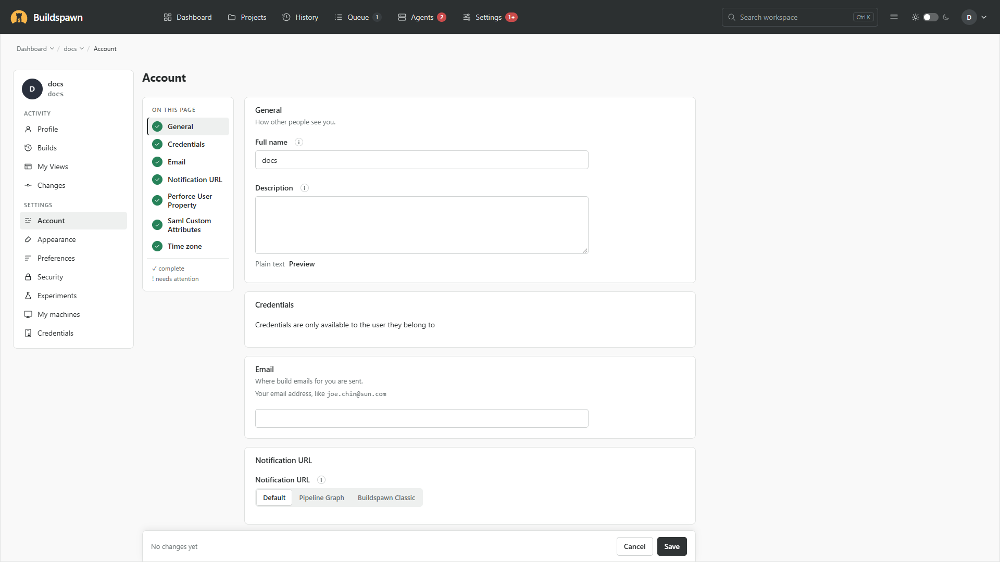

User settings
Every person has their own settings page for their name, password, API tokens, theme, time zone and more.
When to use it
Use it to set up your own account, or to help someone else (an administrator can open any user’s settings from Settings › Users). The settings belong to one person and do not change anything for other people.
How to open it
- Click your initial (the round button) at the right of the top bar.
- Choose one of the pages: Account, Security, Appearance or Preferences. Your profile page (your name) has My machines too.
- Change what you need and click Save.

| Page | What it holds |
|---|---|
| Account | Full name, description, credentials, e-mail, notification URL, Perforce e-mail, SAML attributes, time zone. |
| Security | Password, API tokens, session termination. |
| Appearance | Theme, console links, console line times. |
| Preferences | Start view and search. |
| Feature preview | Switches for trial features. The page is hidden when no trial feature exists. |
| My machines | Your own computers that can run your builds. See Personal agents. |
Every setting
Account
| Setting | What it does | Default | Example |
|---|---|---|---|
| Full name | How other people see you. Use your real name, so people recognise you instead of your ID. | The user ID | Dana Kim |
| Description | A short text on your profile page, with a Preview. It follows the markup formatter on Security settings. | Empty | Build engineer, Unreal and Perforce |
| Credentials | Credentials that only you can use. They are not available to anyone else. The section opens your own credentials store. | None | A personal Perforce password |
| Where build e-mails for you are sent. | Empty | dana.k@studio.example | |
| Notification URL | Chooses which page the links in notifications and in other tools open: the default page, or another provider’s page. | Default | Default |
| Perforce User Property › P4 Email | The e-mail address from your Perforce user. It is read-only: it is defined in the Perforce user spec. | From Perforce | — |
| Saml Custom Attributes | Extra values your company’s sign-in sent about you, shown as label : value. Read-only. They are set up on SAML sign-in. Shown only for SAML users. | None | Department : Art |
| Time zone | The zone used to show dates and times to you, instead of the server’s zone. | The server’s zone | Europe/Lisbon |
Security
| Setting | What it does |
|---|---|
| Password and Confirm Password | Change your password. Leave both boxes as they are to keep it. Only for people of Buildspawn’s own user database. The password rule from Security realms applies. |
| API Token | Tokens that let scripts and tools sign in as you. Add new token takes a Name and an Expiration (7, 30, 60, 90 days, Custom or No Expiration). Current token(s) shows name, expiry, created and last used. The full guide is API tokens. |
| Session Termination | The button Terminate All Sessions signs you out of every browser and device, and asks you to sign in again. It confirms first, and then says Operation success. All sessions were terminated. Use it when a computer is lost. |
| At a glance | A side card: number of API tokens, last use and whether a password is set. |
Appearance
| Setting | What it does | Default |
|---|---|---|
| Themes | How pages look for you: Default (light), Dark, or Dark (System), which follows your computer’s setting. Your choice wins over the administrator’s default. See Appearance and themes. | The administrator’s choice |
| Console URL Provider | Which page opens for build console links. Views listed higher win over those below. Use Add to add a provider and Delete to remove one. Your list is used instead of the one the administrator set. | Default, then Pipeline Graph View |
| Console line times › Line times | How the console output times each line: Time of day, Time since the build started or Off. The Time control of the console page changes it too. | The administrator’s choice |
Preferences
| Setting | What it does | Default |
|---|---|---|
| Default Views Tab Bar › My Views › Default View | The view you see first on the dashboard, and the view selected when you open your private views. | The server’s default view |
| Setting for search | How the search box matches names. Ignore upper and lower case: typing build also finds Build and BUILD. | On |
Feature preview
A table with Feature, Description and Value. Each row is a feature you can switch on for yourself only. With no trial feature, the page says No feature previews are available at the moment.
Picture from Entra ID
When people sign in with Entra ID, Buildspawn keeps their Microsoft profile photo and uses it as their picture. There is no form for it. See Entra ID sign-in.
My machines
Your profile has a page My machines with Your own computers. Only you can run builds on them. Add a machine with the steps Machine name and System, Download and Your secret. An administrator must allow personal machines, and give you the UsePersonal permission. See Personal agents.
A worked example
Dana works in Lisbon. On Account she sets Time zone to Europe/Lisbon, so build times show in her local time. On Appearance she chooses Dark (System) and sets Line times to Time since the build started. On Security she makes a token called terminal on studio-pc that expires in 90 days.
What you see when it runs
- After Save, pages show your time zone, theme and console times at once.
- Your name and picture appear in the user menu, on builds you started, and in lists.
Problems and fixes
| Problem | What to do |
|---|---|
| There is no Password box. | You sign in with Entra ID or SAML. Change your password at your company. |
| Times are wrong by some hours. | Set your Time zone on Account. |
| The theme does not change. | Click Save. If the administrator forced a theme, the setting may be hidden. |
| The API token is shown only once. | Copy it when it appears. If you lose it, revoke it and make a new one. |